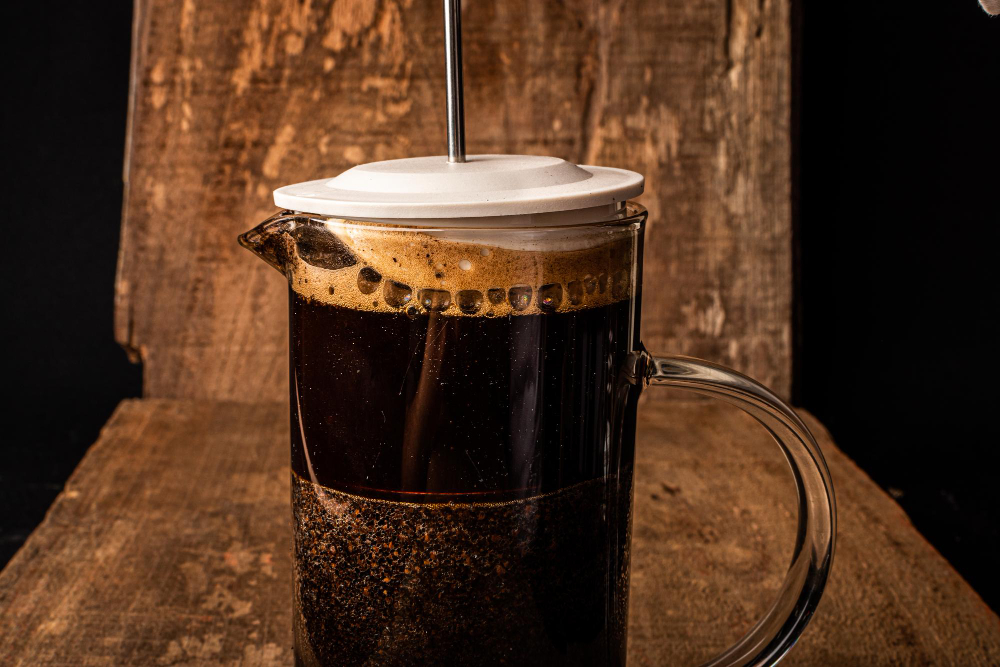
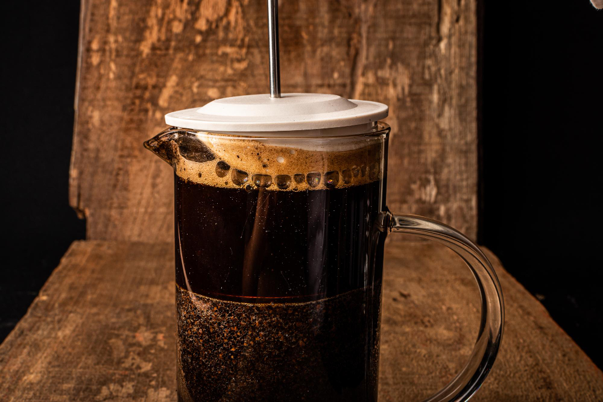

Coffee Junkie Recording is a family-owned coffee roasting company located in the heart of downtown. Our coffee is roasted in small batches to ensure maximum freshness and flavor.
At Coffee Junkie Recording, we offer a variety of coffee blends to suit every taste:
Our coffee is sourced from the finest growers around the world and carefully roasted in small batches in our downtown roasting facility. We use a state-of-the-art roasting system to ensure that every bean is perfectly roasted and bursting with flavor. We take pride in our craft and are committed to producing the best coffee possible.

 
